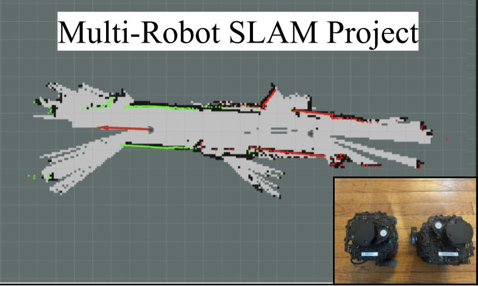

School project based around SLAM
In this project, multiple robots were used to efficiently explore and map an unknown space. Two TurtleBot3's were used in simulation and physically to run Simultaneous Localization and Mapping (SLAM), map merging, and then path planning algorithms to work together to explore an unknown space more efficiently than a single robot.
This project utilized ROS for simulation, real world control, and additionally used ROS packages for SLAM and map merging. The TurtleBot3 robots that were used in this project had a package built for ROS to use for simulation. This packaged allowed easy integration with SLAM and navigation.
My job on this project was to work get all SLAM, map merging, and navigation working on the virtual robots in ROS. In order to complete this project on time, our team utilized built in packages for the SLAM algorithms and map merging. This allowed our team to focus on getting the turtlebot3's running properly. However, throughout the semester we learned how to properly run SLAM and how to merge pointclouds for map merging, through various exercises in MATLAB.
Above you can see two examples of our real world merged maps. For each map, we started our Turtlebot3's in different locations in the room, and then let the LIDAR scanner run while we drove the two robots to map out the rest of the room. On the map, the grey area represents open air in the world, the black lines are obstacles, and the unmarked areas are areas not reached by the robot/LIDAR. As you can see, the map merging was very succesful. The walls are mostly properly merged, with very little noise.
Below is our full write-up for the project, I would encourage reading to get a full understanding!
Here is the PDF to our full write-up